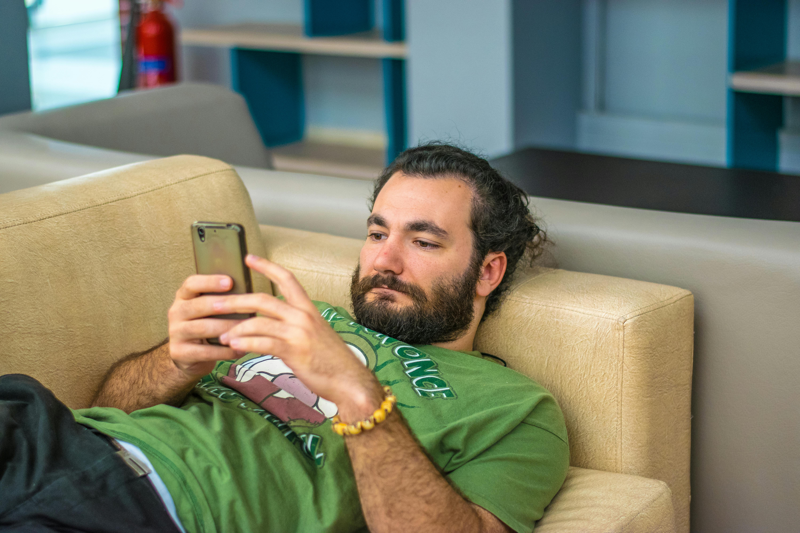

Un véritable check-up en 15 minutes, sans engagement. SuperPsy vous aide à comprendre où vous en êtes, et à savoir quoi faire ensuite, si nécessaire.

01Fatigue psychique, anxiété diffuse, perte d'élan, irritabilité, troubles du sommeil.
Des signaux souvent flous, difficiles à situer.
Comprendre votre équilibre psychique, repérer les zones de fragilité, savoir quoi faire ensuite.
Un bilan structuré pour faire le point.
On fait des bilans réguliers pour le corps. Pas pour le psychique.
Le psychique mérite aussi d'être évalué.
Régulation émotionnelle réduite en période de stress, marquée par une irritabilité et un sommeil fragmenté.
Une cartographie complète qui prend en compte ce qui se passe en vous, autour de vous, et dans votre corps.
La manière dont vos pensées s'organisent et s'enchaînent.
Vos appuis intérieurs et extérieurs, ce qui vous porte.
Ce que vous ressentez et la façon dont vous le régulez.
Énergie, sommeil, tensions — vos signaux corporels.
Votre contexte de vie, vos relations, votre quotidien.
Vos habitudes, vos réactions et stratégies.
« Pas un annuaire de psys. Un appariement basé sur votre profil. »
Conçu avec des psychologues cliniciens
L'appariement se fait sur votre profil, pas votre code postal.
SuperPsy identifie votre profil psychique et vos besoins, puis cherche les praticiens qui correspondent.
Des praticiens dont la pratique colle à ce que vous vivez.
Psychologues, psychothérapeutes, psychiatres — vérifiés et expérimentés sur votre type de situation.
Vous gardez la main à chaque étape, sans pression.
L'orientation est une proposition, jamais une obligation. Vous choisissez librement.
Trois étapes, quinze minutes.
Une conversation guidée avec notre IA spécialisée, votre synthèse instantanée, puis l'orientation si vous le souhaitez. Pas de formulaire, pas de jugement.